ChipXR
Designing immersive XR training to break barriers in semiconductor education
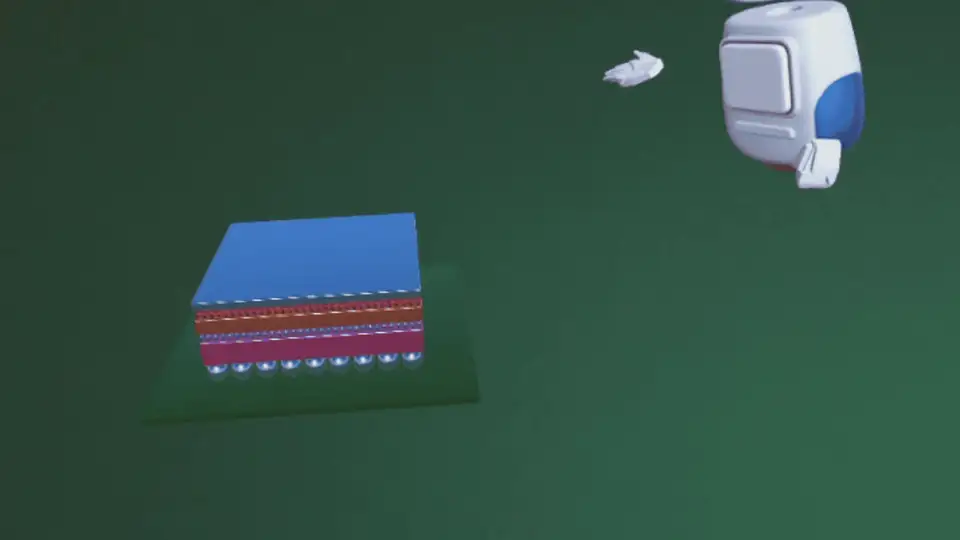
The current semiconductor education lacks resources for engineering students to understand complex semiconductor chips.
Through in-depth interviews with engineering students and industry professionals and initial discussions with semiconductor educators, I uncovered two major pain points in current semiconductor education:
3D chip structures are hard to understand with traditional flat materials.
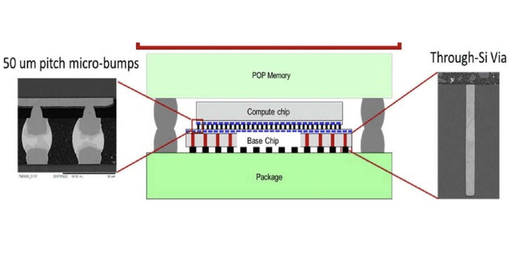
Hands-on labs are limited for students due to cost and feasibility.
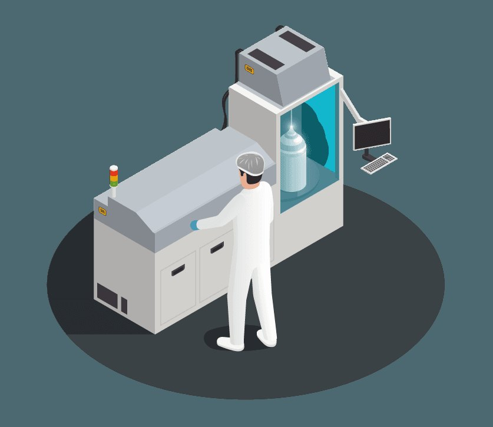
My goal was to create a learning tool that could overcome these challenges.
Partnering with the University of Florida’s Electrical & Computer Engineering Department, we decided to create a tool that could be used in their courses.
…what if we leverage mixed reality?
Through additional brainstorming sessions with semiconductor experts and educators, I realized that MR technology could tackle these pain points all at once.
Make learning easier with intuitive visualizations of complex chip structures.
Enable lab experiences virtually beyond physical and resource constraints.
I tested the concept.
Since MR is an emerging technology, there was limited guidance to inform the design. So I tested an MVP to inform design direction and reduce uncertainties. To better understand user behavior, I let them think-aloud while interacting with our MVP and recorded observation notes.
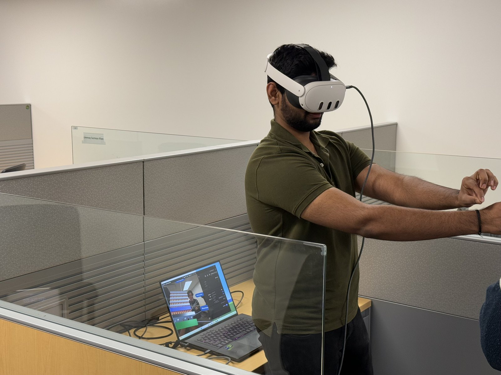
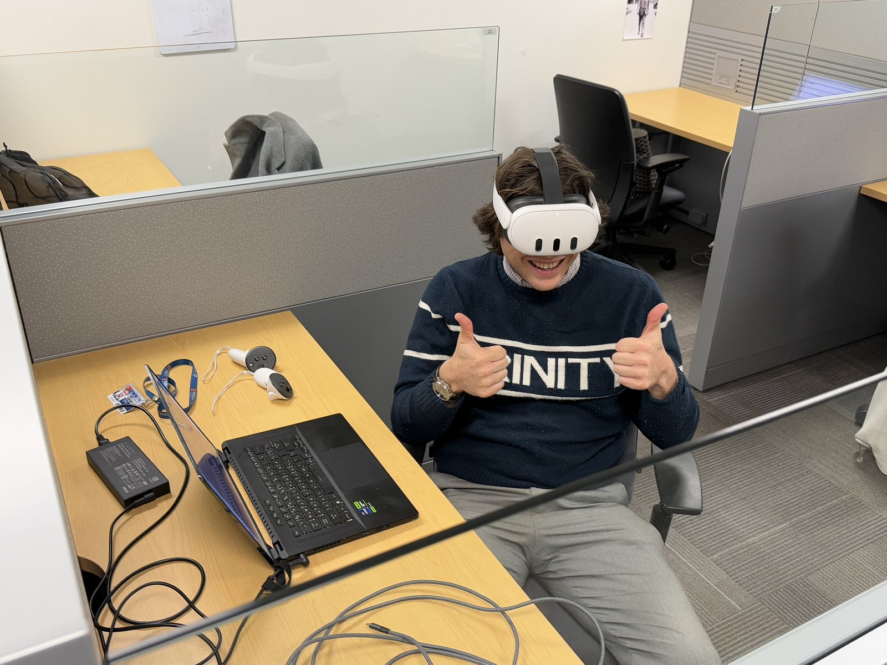
…and found inefficient design creates wrong cognitive load, which can negatively impact learning.
Usability issues found! When users tried to grab or interact with virtual objects to complete tasks, they often failed to locate the objects which led to interaction errors. This happened because in MR environments virtual objects blend into the physical background and cause visual confusion for users.
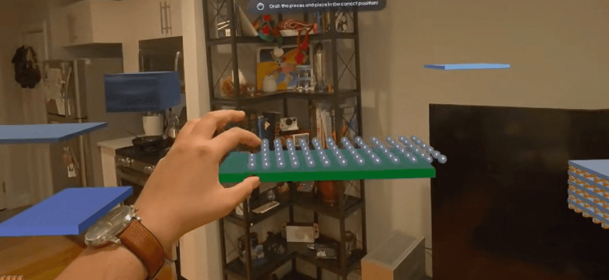
Unnecessary load from interaction failures. We don’t want to waste our brain power like this.
Productive load used for actual learning. This looks right.
Then, how might we design MR learning experiences to manage cognitive load more efficiently?
To identify strategies for better managing cognitive load, I worked with education and HCI researchers to translate learning theories into concrete design decisions.
Add visual clarity through organization and signifiers.
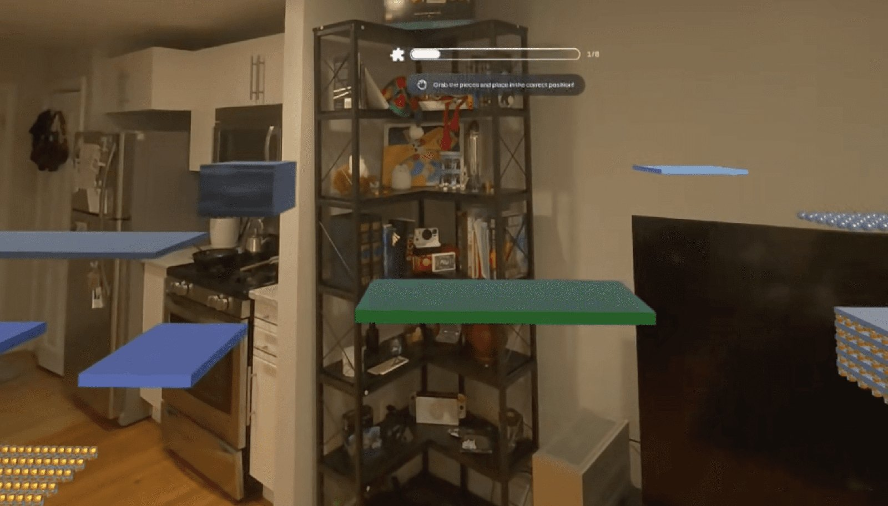
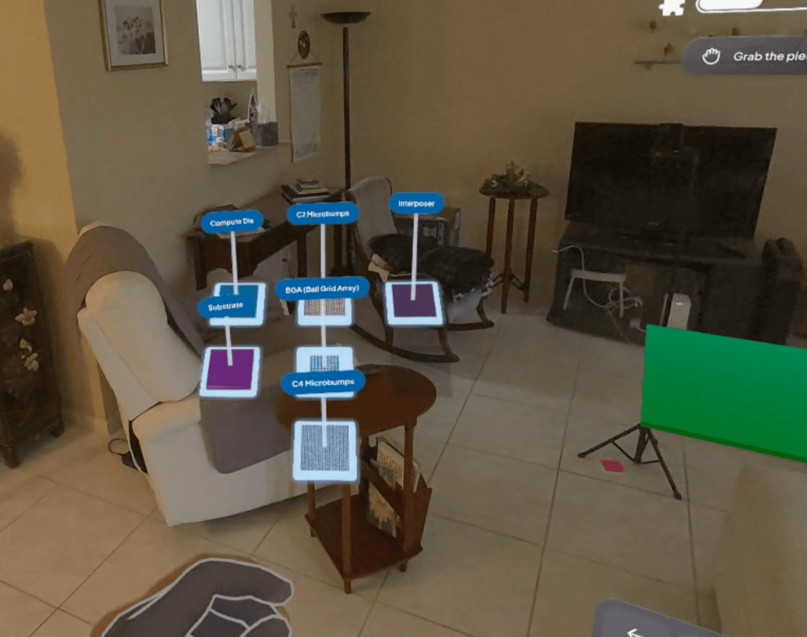
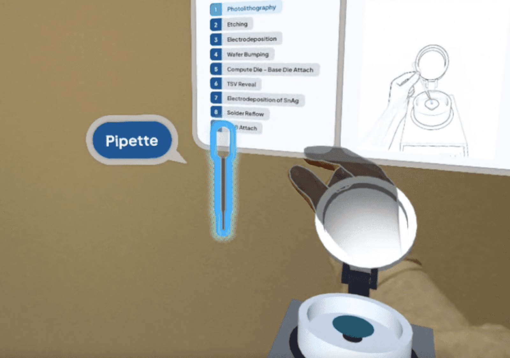
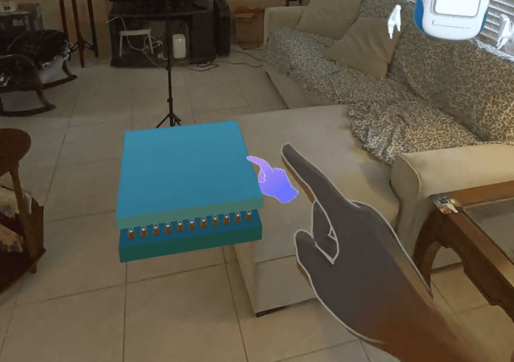
Chunk learning into digestible pieces.
Identify key components and their functions in chip structure.
User task — interact with 3D chip component models with accompanying audio explanations.
Reinforce comprehension of the components and their relationships in the structure.
User task — place component pieces in correct order to build the complete structure.
Understand the chip fabrication process by linking structural elements to procedural flows.
User task — perform hands-on fabrication tasks to build the chip.
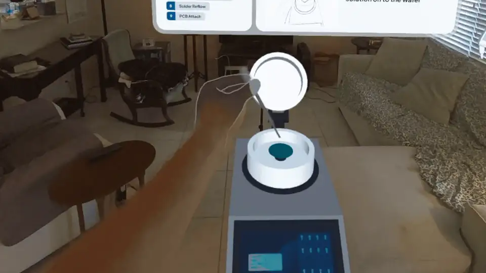
- Photolithography
- Etching
- Electrodeposition
- Wafer Bumping
- Compute Die–Base Die Attach
- TSV Reveal
- Electrodeposition
- Solder Reflow
- PCB Attach
Resolve questions instantly with AI support.
I worked with the engineering team to integrate a fine-tuned GPT API into the system to provide learners with timely support and encourage active learning. The AI teaching assistant addresses learners’ questions in real time with contextual feedback throughout the learning experience.
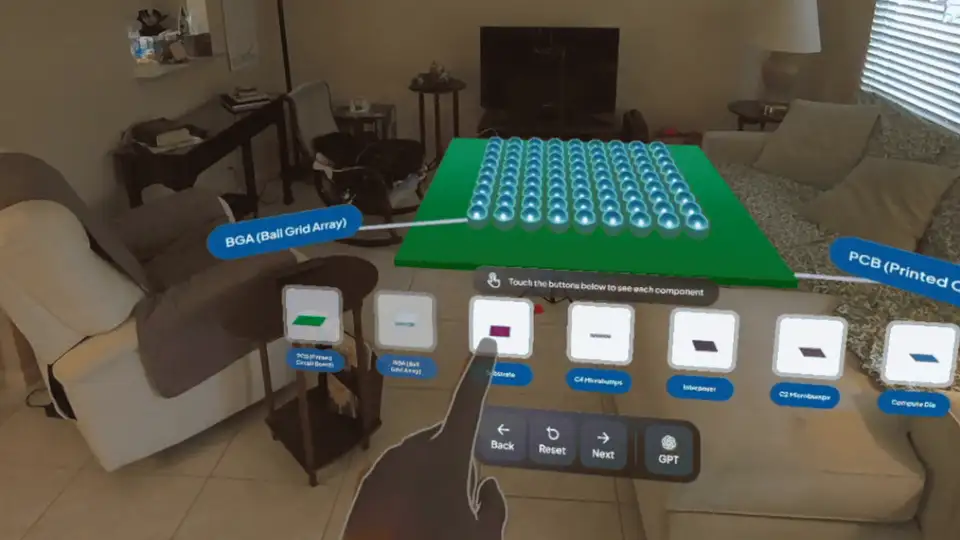
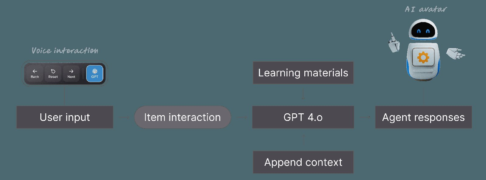
✦ Let students explore complex chip structures in 3D and full 360° view.
✦ Reinforce spatial understanding through an interactive LEGO-like quiz.
✦ Practice the fabrication process through hands-on tasks.
✦ Resolve questions in real time with the AI teaching assistant.
Evaluating ChipXR.
I used mixed-methods to evaluate the app comprehensively, and conducted two rounds of user testing.
Since this tool was designed for university courses, I needed to evaluate the tool and how it could be implemented in real classroom settings. So, I decided to gather feedback directly from students enrolled in the class.
Study design — Step 1: engage with ChipXR while thinking aloud. Step 2: focus-group interviews with 3 participants per session.
I additionally conducted an experiment to evaluate whether ChipXR successfully supports learning quantitatively. To get enough participants, I expanded the criteria and recruited engineering students from related majors using convenience sampling.
Since the AI teaching assistant was newly introduced after the iteration, I evaluated three conditions: ChipXR (MR + AI), an MR-only version without AI, and a video-based version that mirrored traditional teaching methods. To ensure reliable results, I randomly assigned participants to each condition. They completed a pre-survey, engaged with the assigned condition in order, and then completed a post-survey after each session.
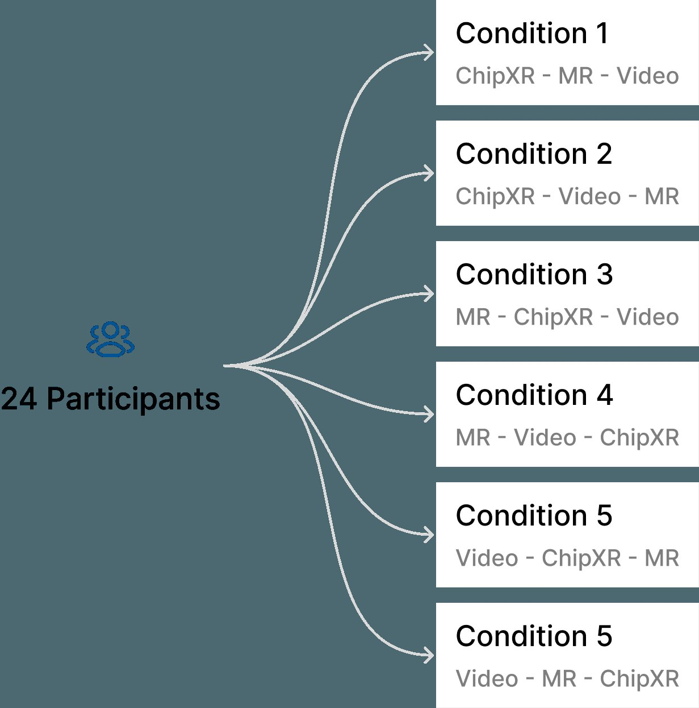
Key survey items — Knowledge (conceptual, procedural, visual-spatial) · Cognitive load (intrinsic, extraneous, germane) · Engagement (Skinner, Kindermann, and Furrer’s engagement framework) · Usability (System Usability Scale).
ChipXR enhanced spatial understanding, managed cognitive load efficiently, and was more engaging than a traditional video lecture.
“Videos usually have a couple side views, but the 360 interactive view made it easier to visualize.”
“Getting that hands-on experience really helped solidify what I had only understood in a vague way before.”
“Especially in fabrication — mistakes are expensive. That’s why VR is great. You can fail without breaking anything.”
Read the full paper: Learning Inside the Chip (CHI 2026) ↗
Co-designing with experts and testing with students helped me overcome my knowledge gap and usability issues. Involving the right stakeholders at the right stages can help solve uncertain problems better than trying to address them alone.
I initially used Qualtrics’ random assignment feature to evenly assign participants to each condition. During the study, I discovered that the feature was not working properly, so I manually managed the remaining assignment to ensure balanced conditions. While tools are useful, continuous monitoring is essential to catch and address unexpected issues.